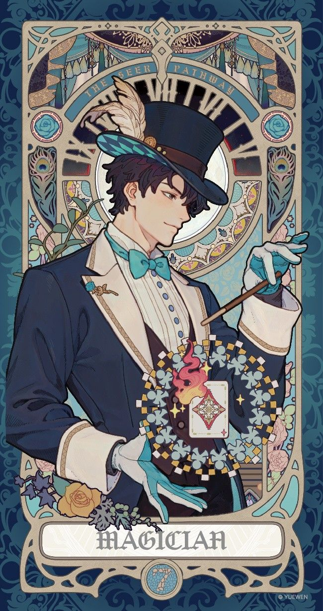

Мир Повелителя тайн
Путь или Путь Божественного представляет собой последовательность из десяти названных Последовательностей, описывающих поэтапное достижение сверхъестественных и мистических сил. Переход на ступень выше осуществляется путем поглощения зелья.
В мире Повелителя Тайн существует двадцать два Стандартных Пути, каждый из которых включает уровни от самого низкого 9 до самого высокого 0. Каждая ступень Последовательности обладает своими собственными способностями, которые развиваются по мере продвижения. Разные Пути могут выполнять совершенно разные функции, от вспомогательных способностей (гадание, создание снаряжения, повышать способности соратников) до мощных атакующих способностей (управление погодой, духами или повышение физ.сил).
Каталог путей
- Провидец
- Ученик
- Мародер
- Зритель
- Бард
- Моряк
- Читатель
- Проситель секретов
- Бессонный
- Сборщик тупов
- Воин
- Ассасин
- Охотник
- Жрец тайн
- Ученый
- Монстр
- Сеятель
- Аптекарь
- Преступник
- Узник
- Адвокат
- Арбитр
Путь главного героя

Основная характеристика
Путь, связанный с тайнами, прорицанием и гаданием. Его последователи способны распознавать знаки судьбы, используя сновидения, карты и различные предзнаменования. По мере продвижения их духовное восприятие обостряется, а память становится лучше.